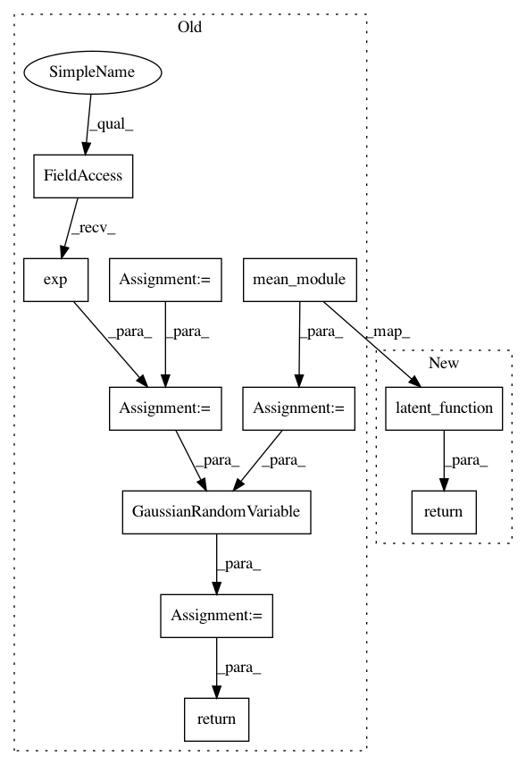

1c9ed4232fcd99f35ab3fef1cf579ba1f6f12645,test/examples/kissgp_gp_classification_test.py,GPClassificationModel,forward,#GPClassificationModel#Any#,24
Before Change
self.initialize_interpolation_grid(50, grid_bounds=[(0, 1)])
def forward(self, x):
mean_x = self.mean_module(x)
covar_x = self.grid_covar_module(x)
covar_x = covar_x.mul(self.log_outputscale.exp())
latent_pred = GaussianRandomVariable(mean_x, covar_x)
return latent_pred
def test_kissgp_classification_error():
model = GPClassificationModel()
After Change
self.latent_function = LatentFunction()
def forward(self, x):
return self.latent_function(x)
def test_kissgp_classification_error():
model = GPClassificationModel()
In pattern: SUPERPATTERN
Frequency: 3
Non-data size: 11
Instances
Project Name: cornellius-gp/gpytorch
Commit Name: 1c9ed4232fcd99f35ab3fef1cf579ba1f6f12645
Time: 2017-11-13
Author: gpleiss@gmail.com
File Name: test/examples/kissgp_gp_classification_test.py
Class Name: GPClassificationModel
Method Name: forward
Project Name: cornellius-gp/gpytorch
Commit Name: 1c9ed4232fcd99f35ab3fef1cf579ba1f6f12645
Time: 2017-11-13
Author: gpleiss@gmail.com
File Name: test/examples/simple_gp_classification_test.py
Class Name: GPClassificationModel
Method Name: forward
Project Name: cornellius-gp/gpytorch
Commit Name: 1c9ed4232fcd99f35ab3fef1cf579ba1f6f12645
Time: 2017-11-13
Author: gpleiss@gmail.com
File Name: test/examples/kissgp_kronecker_product_classification_test.py
Class Name: GPClassificationModel
Method Name: forward